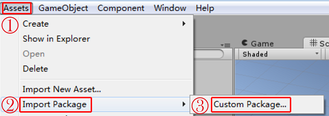

Ximmerse SDK for Unity3D (v1.0)
| Document Status: | Release |
| Document Issue Number: | 1.0 |
| Issue Date: | 2015-12-01 |
| Security Status: | Public |
| Author: | YouSing Huang, Yongtao Hu, Jingwen Dai |
© 2015 XIMMERSE All rights reserved
UNCONTROLLED COPY: The master of this document is stored on an electronic database and is “write protected”; it may be altered only by authorized persons. While copies may be printed, it is not recommended. Viewing of the master electronically ensures access to the current issue. Any hardcopies taken must be regarded as uncontrolled copies.
Table of Content
- 1 Release Statement
- 2 SDK Setup
- 3 Ximmerse.Core Namespace
- 4 Ximmerse.CrossInput Namespace
- 5 Other Namespaces
- 6 Samples
- 7 Developing with Gear VR
1 Release Statement
1.1 Foreword
This SDK is designed mainly for Unity3D Engine. In future, we will provide support for other developing environments.
1.2 Test Environment
- Operating System (OS): Windows 7 PC
- Unity3D Engine Version: Unity 5.1.3f1 (32-bit)
1.3 Notes
- This SDK does not support Linux or Mac OS X, please develop using Windows (PC).
- You can use other versions of Unity3D. However, versions 4.X are not verified or technically supported.
- It is recommended to use Versions 5.X due to its support for VR.
- In terms of compatibility or script update issues for different versions of Unity3D, it is recommended to use preprocessor macros.
1.4 Technical Support
- Email: support@ximmerse.com
2 SDK Setup
2.1 Import Resource Package
- In an empty Unity project, click Unity menu
Assets-->Import Package-->Custom Package... - In the file selection dialog, select
Ximmerse SDK 1.0.unitypackage. - In
Importing package, clickImport.
- Done! There will be two folders named
PluginsandXimmerse SDKunder folder$(ProjectDir)/Assets.
2.2 Setup Ximmerse SDK under Unity VR
Note: Please make sure that your Unity version supports VR mode, i.e. v5.1.0+.
- Click Unity menu
File-->Build Settings...
- In
Build Settings, clickPlayer Settings....
- In
Inspectorview-->Settings for PC, Mac & Linux Standalonetab-->check theVirtual Reality Supportedcheckbox.
- Click Unity menu
File-->New Scene, to create a scene.
- Select
Main Cameragame object in theHierachyview-->click Unity menuGameObject-->Create Empty Child, to add a child object.
- Right click the added object in the
Hierachyview-->Rename, to rename it to bePivot. - In
Project Browser-->Assets-->Ximmerse SDK-->Prefabs-->Input-->drag the prefabs named_CrossInputto theHierarchyview to instantiate it. - In
Hierarchy-->_CrossInput-->_XimInput-->XimBlobTracking.
- In
Inspector, change 'Pivot' key to be the transform of game objectPivot, which is the child game object ofMain Camera.
2.3 Input Setup for Ximmerse Hardwares
2.3.1 Stereo Camera Component
Item Pose Name under Points refers to the key of the corresponding VirtualPose.
2.3.2 Ximmerse's Joystick (X-COBRA)
In file $(ProjectDir)/Assets/Ximmerse SDK/Prefabs/Input/X-Cobra Alpha 0/Sensors, there are 4 subclasses of SensorBase, which refers to IMU, button, trigger and axis respectively.

-
IMU: Item
Pose Namerefers to the key of the correspondingVirtualPose.
-
Button: Enter edit mode by checking the
Edit Modecheckbox inInspectorview. The left columns are display names (for easy editing) and right columns refer to the keys of the correspondingVirtualButton.
-
Trigger:
Axis Namerefers to the key of the correspondingVirtualAxisandButton Namerefers to the key of the correspondingVirtualButton. -
Axis: Enter edit mode by checking the
Edit Modecheckbox inInspectorview. The left columns are display names (for easy editing) and right columns refer to the keys of the correspondingVirtualAxis.
About Config Files
There is one config file CrossInput.txt under folder $(ProjectDir)/Assets/Ximmerse SDK/Resources/Configs, through which you can setup detailed parameters of Ximmerse hardwares after the release of Unity build applications.
In this SDK, there are two MonoBehaviour scripts, i.e. XimBlobTracking_Usb.cs and DeviceBase.cs, which use the config file. In both scripts, there are two shared keywords, i.e. configPath and configSec. configPath refers to the path of the config file and configSec refers to the referred section in the config file. Please refer here to know more about the file formats of config files.
In the following two screenshots of the Inspector view, the red boxes highlight the setups of the config files and blue boxes highlight the fields that can be edited in the config file.


You can see the corresponding sections and fields in file CrossInput.txt.
If you don't want to use config files, just set configPath to be empty and write the parameters of config files to the corresponding fields of MonoBehaviour script.
2.4 Programming
2.4.1 Access Axes and Buttons
-
Import
Ximmerse.CrossInputnamespace.using Ximmerse.CrossInput; -
Access the
Horizontalaxis of left joystick and theVerticalaxis of right joystick.float left_h =CrossInputManager.GetAxis("Left_Horizontal"); float right_v =CrossInputManager.GetAxis("Right_Vertical");
These information can also be obtained by
HandJoystickas follows, which are equivalent to the above functions.float left_h =HandJoystick.joysticks[0].GetAxis("Horizontal"); float right_v =HandJoystick.joysticks[1].GetAxis("Vertical");
-
Access the
Fire1button of left joystick and theJumpbutton of right joystick.if(CrossInputManager.GetButtonDown("Left_Fire1")) { // Let's fire... } if(CrossInputManager.GetButtonDown("Right_Jump")){ // Let's jump... }
Similarly, these information can also be obtained by
HandJoystickas follows, which are equivalent to the above functions.if(HandJoystick.joysticks[0].GetButtonDown("Fire1")){ // Let's fire... } if(HandJoystick.joysticks[1].GetButtonDown("Jump")){ // Let's jump... }
2.4.2 Access Position and Rotation
Taking the sample script HandController.cs under folder $(ProjectDir)/Assets/Ximmerse SDK/Scenes/Example Scripts as an example:

-
Import
Ximmerse.CrossInputnamespace.using Ximmerse.CrossInput; -
Obtain the reference of
VirtualPosebyCrossInputManager.VirtualPoseReference(poseName).m_Pose=CrossInputManager.VirtualPoseReference(poseName);
The properties and fields of
VirtualPoseare as follows:public class VirtualPose:SmartPointer{ public string name{ get; private set; } public bool matchWithInputManager { get; private set; } public bool active=true; public int id; public Vector3 position; public Quaternion rotation; ... }
-
Set
positionandrotationofTransformto bepositionandrotationofVirtualPosein functions likeMonoBehaviour.FixedUpdate()./// <summary> /// /// </summary> protected virtual void FixedUpdate(){ // m_HandTrans.position=m_Pose.position; m_HandTrans.rotation=m_Pose.rotation; }
3 Ximmerse.Core Namespace
3.1 Overview
This namespace is used for accessing the APIs of Ximmerse's hardwares. As our beta versions are still in a fast iteration stage, there will be different versions for the supported hardware. Please pay attention to what your DK version is. Though there will be big changes for this namespace, it should be OK to use Ximmerse hardwares with general software as long as the name and address of the equipment are set properly. Note that in most cases, you will not need to access this namespace. In terms of input interfaces, you only need to access Ximmerse.CrossInput. You can also apply Razer's Hydra in developing as Ximmerse.CrossInput is a compatible input solution.
3.2 Brief Introduction
In Unity, Ximmerse's joystick (X-COBRA) is abstracted as DeviceBase. Information related to the Ximmerse's joystick (e.g. axes, buttons, triggers and IMU) is abstracted as SensorBase.
Prefabs should set up automatically in the SDK. Developers only need to set the corresponding config file under folder project_folder/Ximmerse SDK/Resources/Configs/ in order to setup Ximmerse's X-COBRA after the formal release.
DeviceName is the device number. Please refer to the txt file under the crossponding samples.
DeviceAddress is the serial port address under Windows, which is the Bluetooth address under Android.
FmtJoy refers to the character string of the input formatted key. For example, key "Fire1" will be formatted to "Left_ Fire1" in CrossInputManager (under Ximmerse.CrossInput namespace) when joystick's FmtJoy is "Left_{0}".
USB is used for communication of the stereo camera module, which is recommended to setup in the txt file under folder project_folder/Assets/StreamingAssets/Configs/.
In general cases, the listener IP should be set to 192.168.1.1, the port number to 8873 and assign Pivot properly, which stands for one Transform of the stereo camera module in Unity (as the next child transform under the head-mounted display coordinate system in VR SDK). Sensitivity is the coordinate scaling value. PoseName in the Points list is the projected pose name.
Remarks:
- Config files are located under folders below:
- Unity editor:
project_folder/Ximmerse SDK/Resources/Configs/ - Windows release version:
release_folder/release_folder_Data/StreamingAssets/Configs/ - Android release version:
Android_SD_card_root_folder/Ximmerse Runtime/Configs/
- Unity editor:
4 Ximmerse.CrossInput Namespace
4.1 Overview
Compatible solution for multiple input. CrossInputManager is the access entry point, which is modified from the official sample UnityStandardAssets.CrossPlatformInput. In order to run Ximmerse.CrossInput successfully, GameObject with CrossInputManager component (whose properties source list should also be set up properly) should be added to the game scene.
Tip: You can turn off
CrossInputManager'suseCrossInputbefore running so thatCrossInputManagerwill use the embedded input APIs of Unity.
On the other hand, you can customize other input solutions, such as Razer's Hydra, Xbox 360 controller or Ximmerse's joystick (X-COBRA). Instead of writing different access interfaces for different input solutions, you only need to access the static functions of CrossInputManager.
For example, assuming you want to acquire the status of the joystick and button (pressed or not), you will need to call Input.GetAxis(axisName) and Input.GetButton(buttonName) in native Unity programming. With Ximmerse.CrossInput input system, they can be easily replaced by CrossInputManager.GetAxis(axisName) and CrossInputManager.GetButton(buttonName).
Current input solutions can be divided into two categories: traditional controllers (keyboard & mouse and joystick) and motion controllers (with position and orientation in space). With Ximmerse.CrossInput, motion sensing input is abstracted as VirtualPose class (with position and orientation in space). You can obtain the reference of the VirtualPose by simply calling CrossInputManager.VirtualPoseReference(name).
Tip: In the
UnityStandardAssets.CrossPlatformInputsample, joystick and button are abstracted asVirtualAxisandVirtualButton. Please refer to the Extensions section on how to extendXimmerse.CrossInput.
In this SDK, the full preset hierarchy is as follows. To disable one particular input component, simply set GameObject's active to false on the respective script.

4.2 Selected Classes Introduction
4.2.1 CrossInputManager
Input manager, similar to UnityStandardAssets.CrossPlatformInput.
The related input APIs of CrossPlatformInputManager are as follows:
| Return Type | Function | Description |
|---|---|---|
Boolean |
AxisExists(String) |
return true while the virtual axis identified by given string exists |
Boolean |
ButtonExists(String) |
return true while the virtual button identified by given string exists |
Single |
GetAxis(String) |
return the value of the virtual axis identified by given string |
Single |
GetAxisRaw(String) |
return the value of the virtual axis identified by given string with no smoothing filtering applied |
Boolean |
GetButton(String) |
return true while the virtual button identified by given string is held down |
Boolean |
GetButtonDown(String) |
return true during the frame the user pressed down the virtual button identified by given string |
Boolean |
GetButtonUp(String) |
return true the first frame the user releases the virtual button identified by given string |
Boolean |
PoseExists(String) |
return true while the virtual pose identified by given string exists |
Vector3 |
GetPosePosition(String) |
return the value of the position in the space identified by given string |
Quaternion |
GetPoseRotation(String) |
return the value of the rotation in the space identified by given string |
Void |
RegisterVirtualAxis(VirtualAxis) |
register one virtual axis to CrossInputManager |
Void |
RegisterVirtualButton(VirtualButton) |
register one virtual button to CrossInputManager |
Void |
RegisterVirtualPose(VirtualPose) |
register one virtual pose to CrossInputManager |
Void |
SetAxis(String,Single) |
set the value of the axis identified by given string |
Void |
SetAxisNegative(String) |
set the value of the axis identified by given string to -1 |
Void |
SetAxisPositive(String) |
set the value of the axis identified by given string to 1 |
Void |
SetAxisZero(String) |
set the value of the axis identified by given string to 0 |
Void |
SetButtonDown(String) |
set the virtual button identified by given string to be held down |
Void |
SetButtonUp(String) |
set the virtual button identified by given string to be released |
Void |
SetPose(String,Vector3,Quaternion) |
set the value of the pose identified by given string |
Void |
SetPosePosition(String,Vector3) |
set the value of the position identified by given string |
Void |
SetPoseRotation(String,Quaternion) |
set the value of the rotation identified by given string |
Void |
SetVirtualMousePositionX(Single) |
set the value of x-axis of the virtual mouse |
Void |
SetVirtualMousePositionY(Single) |
set the value of y-axis of the virtual mouse |
Void |
SetVirtualMousePositionZ(Single) |
set the value of z-axis of the virtual mouse |
Void |
UnRegisterVirtualAxis(VirtualAxis) |
un-register one virtual axis |
Void |
UnRegisterVirtualButton(VirtualButton) |
un-register one virtual button |
Void |
UnRegisterVirtualPose(VirtualPose) |
un-register one virtual pose |
VirtualAxis |
VirtualAxisReference(String) |
return the reference of the virtual axis identified by given string |
VirtualAxis |
VirtualAxisReference(Object,String,Boolean) |
return the reference of the virtual axis identified by given string |
VirtualButton |
VirtualButtonReference(String) |
return the reference of the virtual button identified by given string |
VirtualButton |
VirtualButtonReference(Object,String,Boolean) |
return the reference of the virtual button identified by given string |
VirtualPose |
VirtualPoseReference(String) |
return the reference of the virtual pose identified by given string |
VirtualPose |
VirtualPoseReference(Object,String,Boolean) |
return the reference of the virtual pose identified by given string |
Remarks:
A mouse's axis information can be obtained by
CrossInputManager.mousePosition. Due to poor user experience, it is not recommended to use traditional mouse as VR input.Alike
UnityEngine.Input,CrossInputManager's interface can only be accessed inMonoBehaviour.Update().-
The priority of
CrossInputManagerscript should be set higher than the normal ones in order to make sure input can be written toCrossInputManager's cache while being called. This can be set inEdit$\rightarrow$Project Settings$\rightarrow$Script Execution Order:
4.2.2 UnityInput
You can write the embedded input of Unity to CrossInputManager's input cache. The embedded input of Unity can be further obtained through CrossInputManager.

4.2.3 HandJoystick
Input interface to distinguish left and right hands. It's not easy to distinguish left and right hands as strings are used as keys in CrossInputManager. With the handy accessor HandJoystick, developers can use formatted strings and the string arrays of input keys to instantiate an instance. Input can be accessed by HandJoystick.GetAxis(axisName) and HandJoystick.GetButton(buttonName). Please refer to the following example:
string[] joystickFmts=new string[2]{"j0_{0}","j1_{0}"}; // joystick list
string[] axes=new string[2]{"Horizontal","Vertical"}; // axes list
string[] buttons=new string[4]{"Fire1","Fire2","Fire3","Jump"}; // button list
HandJoystick[] joysticks=new HandJoystick[2]{new HandJoystick(),new HandJoystick()}; // HandJoystick list
// initialize HandJoystick
joysticks[0].InitInput(joystickFmts[0],axes,joystickFmts[0],buttons, "");
joysticks[1].InitInput(joystickFmts[1],axes,joystickFmts[1],buttons, "");
// access input through HandJoystick
joysticks[0].GetAxis("Horizontal"); // use short key "Horizontal", actual registered key is "j0_Horizontal"
joysticks[1].GetButtonDown("Fire1"); // use short key "Fire1", actual registered key is "j1_Fire1"4.3 Extensions
As mentioned above, different input solutions are abstracted as IInputSource interfaces in SDK. Thus, developers can customize multiple input solutions of their own.
The interface function of IInputSource is as follows:
public interface IInputSource
{
// Methods
int EnterInputFrame();
int ExitInput();
int ExitInputFrame();
int InitInput();
// Properties
bool enabled {get; set;}
}| Function | Description |
|---|---|
InitInput() |
initialize input source, return 0 if successful |
ExitInput() |
exit input source and release related sources, return 0 if successful |
EnterInputFrame() |
enter input frame, write corresponding input information to CrossInputManager's input cache, return 0 if successful |
ExitInputFrame() |
exit input frame, return 0 if successful |
Remarks:
Input cache refers to the list of
VirtualAxis,VirtualButtonandVirtualPoseofCrossInputManager.Input frame refers to the time stamp when the program reads the input (
MonoBehaviour.Update()).
In order to run in Ximmerse.CrossInput, it only needs to implement the MonoBehaviour of IInputSource's interface and add it to the property source list of CrossInputManager.
Similarly, Razer's Hydra can also be used due to its compatibility with Ximmerse.CrossInput by adding its SDK SixenseUnityPlugin to the project and compatible scipt Sixense Input.cs to CrossInputManager.

5 Other Namespaces
Some scripts belong to the Utility class. Demos are available for them where you can edit to fit your needs. Some namespaces belong to low level encapsulation of the SDK which in general cases, will not be used in project development. There are some other namespaces in this SDK, including:
-
Ximmerse.Animation: for easy implementation of animation solutions, likeHandAnimator. -
Ximmerse.IO: for IO Stream under Windows and Android and encapsulation of IO tools class. -
Ximmerse.UI: for extension of UGUI and the compatible solution of traditional UI and VR UI.
6 Samples
Note: all samples can be found in folder
$(ProjectDir)/Assets/Ximmerse SDK/Scenes/.
6.1 CrossInputManagerGUI
The profiler of Ximmerse.CrossInput.CrossInputManager, from which you can clearly see the input status of CrossInputManager.
6.2 HandController
This sample demonstrates how to obtain the VirtualPose and how to control hand stretches using the trigger value.

6.3 UnityToXimmerse
This sample demonstrates how to quickly transfer a Unity project to Ximmerse.CrossInput.
Transfers can be done by setting Input or CrossPlatformInputManager to CrossInputManager through using keyword.
// <!-- TODO: only need to modify here
// using UnityStandardAssets.CrossPlatformInput;
using CrossPlatformInputManager=Ximmerse.CrossInput.CrossInputManager;
// TODO -->If the Unity interface is used in this sample, the hierarchy will be
If the Ximmerse.CrossInput interface is used in this sample, the hierarchy will be
6.4 HydraToXimmerse
This sample demonstrates how to quickly transfer a Razer's Hydra project to Ximmerse.CrossInput. Some modifications exist for the interfaces to be accessed.
If SixenseHands of SixenseInput SDK is used in this sample, the hierarchy will be

If HydraToXimmerse of this SDK is used in this sample, the hierarchy will be
- First remove the original
SixenseInputand add the preset object ofCrossInputManagerthen, check theAs Hand Joystickcheckbox of the compatibleCrossInput'sSixenseInput,HandJoystickthus will create two joystick accessors automatically.
- Remove
SixenseHandsControllerscript and add the parent transform withPoseMoverforHand-RightandHand-Leftto achieve no rotation shift of theTransformcontrolled byPoseMover, i.e. no rotation for theTransformcontrolled byPoseMoverwhen the correspondingVirtualPosehas no rotation. Meanwhile, setlocalPositionofHand-RightandHand-LefttoVector3.zero.

-
Move the left and right pivots of
SixenseInputthat is compatible toCrossInputto wherePoseMoveris.
-
Modify
SixenseHand.csto importXimmerse.CrossInputnamespace.// <!-- TODO using Ximmerse.CrossInput; // TODO -->
-
Replace
SixenseInput.Controllerin the script byHandJoystick.// <!-- TODO //public SixenseInput.Controller m_controller = null; public HandJoystick m_controller; // TODO -->
-
Obtain
m_controllerfromHandJoystick.joysticks, reference 0 for left hand and 1 for right hand.// <!-- TODO //m_controller = SixenseInput.GetController( m_hand ); m_controller = HandJoystick.joysticks( (int)m_hand-1 ); // TODO -->
-
When accessing input interface, replace the original
SixenseInputfunction with theHandJoystickfunction of Unity style.// <!-- TODO //if ( m_controller.GetButton(SixenseButtons.ONE) ) { if ( m_controller.GetButton("ONE") ) { // do something } // TODO -->
-
Map trigger value to axes and buttons, i.e.
HandJoystick.GetAxis(triggerName)andHandJoystick.GetButton(triggerName).// <!-- TODO //float fTriggerVal = m_controller.Trigger; float fTriggerVal = m_controller.GetAxis("TRIGGER"); // TODO -->
Ensure that
triggerNameis not a constant. It should be consistent with the crossponding value ofXimmerse.CrossInput.CrossInputManager. It's more convenient to obtain the information of given joystick from multiple ones by replacing the full key ofCrossInputManagerwith short keys.
7 Developing with Gear VR
7.1 Hardware Requirement
- Ximmerse X-Hawk
- Ximmerse X-Hawk USB Connector
- Gear VR2
- Samsung mobile phone: Galaxy S6
7.2 Steps
-
Enable developer mode in Galaxy S6. This can be done in
Settings-->Device-->Applications-->Application manager-->Gear AR Service-->Storage-->MANAGE STORAGE-->Developer-->Developer mode.Tip: If you do not see the
Developer modeoption inGear AR Service, tapVR Server Versionat least 6 times. By re-entering the dialog, you will be able to see it.
- Connect the X-Hawk's USB port C to a power bank.
- Connect the X-Hawk's USB port A to the X-Hawk.
-
Connect the X-Hawk's USB port B to the Galaxy S6. Wait until
Choose an app for the USB devicedialog pops up. Note that all the available apps that use Ximmerse's SDK will be displayed here.
Tip: If the
Choose an app for the USB devicedialog does not pop up after a while, you will need to clear the cache of the previous apps that use Ximmerse's SDK. This can be done inSettings-->Device-->Applications-->Default applications-->Clear defaults-->CLEAR.
-
Choose any of the available apps to continue. Take
Ximmerse SDK 1.00for example, select it and click theALWAYSoption to continue. You will be able to see the stereo camera demo running on the Galaxy S6. - Remove port B from the Galaxy S6 and connect it to the Gear VR.
- Insert Galaxy S6 into Gear VR. You will be able to see the stereo camera demo running on the Galaxy S6.
- You are now ready to enjoy VR on the Gear VR.
Tip: If you want to switch to other apps, for example from
Ximmerse SDK 1.00toUsbListener, you will also need to clear the cache of previous apps that used Ximmerse's SDK as mentioned previously.